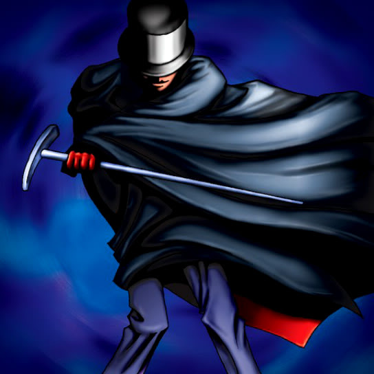

The Bewitching Phantom Thief

Description: "Able to move and attack without triggering an opponent's TRAP (LR)."
STATS
ATK: 700
DEF: 700DECK COST
Deck Cost per Card: 19EFFECT NOT IMPLEMENTED
Fusion List (13 Possible Fusions)
- The Bewitching Phantom Thief + Bone Mouse = Magical Ghost
- The Bewitching Phantom Thief + Corroding Shark = Magical Ghost
- The Bewitching Phantom Thief + Fiend's Hand = Magical Ghost
- The Bewitching Phantom Thief + Fire Reaper = Magical Ghost
- The Bewitching Phantom Thief + Flame Ghost = Magical Ghost
- The Bewitching Phantom Thief + Mega Thunderball = The Immortal of Thunder
- The Bewitching Phantom Thief + Monsturtle = 30,000-Year White Turtle
- The Bewitching Phantom Thief + Mystic Lamp = Lord of the Lamp
- The Bewitching Phantom Thief + Oscillo Hero #2 = The Immortal of Thunder
- The Bewitching Phantom Thief + Phantom Ghost = Magical Ghost
- The Bewitching Phantom Thief + Shadow Specter = Magical Ghost
- The Bewitching Phantom Thief + Skull Servant = Magical Ghost
- The Bewitching Phantom Thief + Wing Egg Elf = Dark Elf